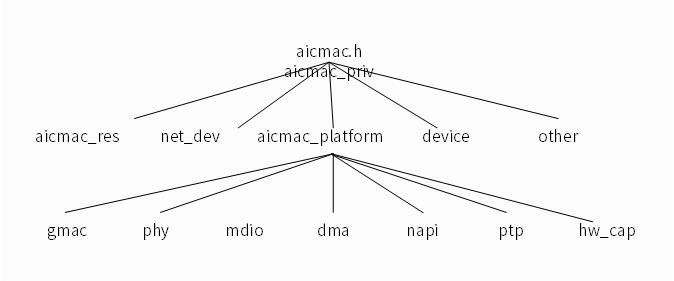
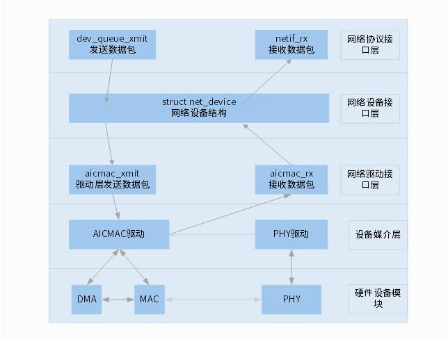

设计说明
3 Dec 2024
Read time: 1 minute(s)
Ethernet 的源码涉及以下目录：
-
MAC 驱动：MAC 的主驱动代码
drivers/net/ethernet/artinchip
-
PHY 驱动：使用到的 mdio，phy 等模块的驱动
drivers/net/phy
-
SysConfig：系统时钟选择，delay 设置等
drivers/misc/artinchip-syscfg.c
文件命名说明
aicmac_module_submodule.c aicmac_module_submodule.h
| 文件名称 | 用途 | 备注 |
|---|---|---|
| aicmac.h | priv 数据结构，宏入口 | - |
| aicmac_core.c | 驱动核心逻辑 | - |
| aicmac_platform.c | 平台相关，驱动注册，dts 配置处理 | - |
| aicmac_platform.h | platform 数据结构，包含其他模块 | - |
| aicmac_napi.c | napi 接口及相关逻辑 | - |
| aicmac_mac.c | mac 相关逻辑代码 | - |
| aicmac_gmac_reg.c | gmac registers | - |
| aicmac_dma.c | dma 相关逻辑代码 | - |
| aicmac_dma_reg.c | dma registers | - |
| aicmac_dma_desc.c | dma descriptor | entended descriptor |
| aicmac_dma_ring.c | dma ring mode | 推荐使用 ringmode |
| aicmac_dma_chain.c | dma chain mode | - |
| aicmac_mdio.c | mdio 相关逻辑代码 | - |
| aicmac_phy.c | physic 相关逻辑代码 | - |
| aicmac_ethtool.c | ethtool 相关逻辑代码 | - |
| aicmac_macaddr.c | mac 地址各种生成逻辑 | - |
| aicmac_util.c | 公共函数 | 主要为信息格式化输出 |
| aicmac_1588.c | IEEE1588/PTP 相关逻辑 | - |
| aicmac_hwstamp.c | hardware stamp, 为 IEEE1588 服务 | - |
- 函数命名说明：
aicmac_module_method
- C
文件格式
// SPDX-License-Identifier: GPL-2.0-only /* * Copyright (C) 2021 ArtInChip Technology Co., Ltd. * Author: Keliang Liu <keliang.liu@artinchip.com> */ #include <> #include “”
- H
文件格式
/* SPDX-License-Identifier: GPL-2.0-only */ /* * Copyright (C) 2021 ArtInChip Technology Co., Ltd. * Author: Keliang Liu <keliang.liu@artinchip.com> */ #ifndef _XXX_XXX_H_ #define _XXX_XXX_H_ #endif - Module
Description
MODULE_AUTHOR("Keliang Liu"); MODULE_DESCRIPTION("ArtInChip GMAC Driver"); MODULE_ALIAS("platform:" AICMAC_RESOURCE_NAME); MODULE_LICENSE("GPL");
驱动架构

驱动模块描述：
-
Platform：驱动入口，进行驱动声明和注册，dts 解析
-
Core：驱动核心逻辑，调度其他模块
-
MAC：MAC 子模块处理，其中寄存器操作接口单独封装
-
DMA：DMA 相关逻辑处理，寄存器，Ring，Chain，Descriptor 单独封装
-
MDIO：MDIO 总线相关逻辑处理
-
PHY：PHY 模块相关逻辑处理
-
NAPI：NAPI 接口逻辑处理
-
ethtool：提供 ethtool 接口的逻辑
-
mac addr：和各种外设资源配合完成 mac 地址的逻辑
-
1588：对 IEEE1588（PTP）的逻辑封装

